Breakfast Recipes
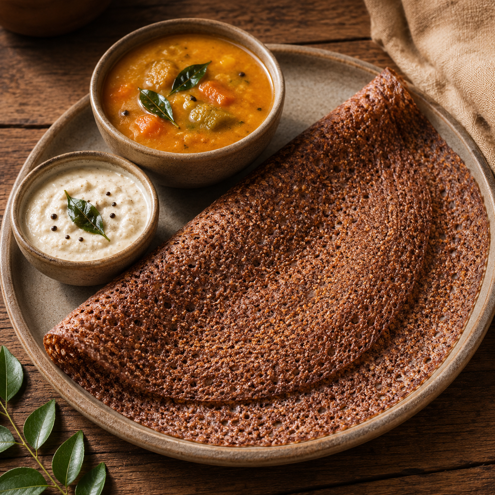
Ragi Dosa
High in calcium and fiber, ideal for a nutritious breakfast.
Ragi Dosa
Ingredients
- 1 Cup Ragi Flour
- 1 Onion
- 1 Green Chilli
- Salt
Method
- Mix all ingredients with water.
- Prepare smooth batter.
- Pour on hot tawa.
- Cook both sides and serve.
Benefit: Rich in Calcium & Fiber.
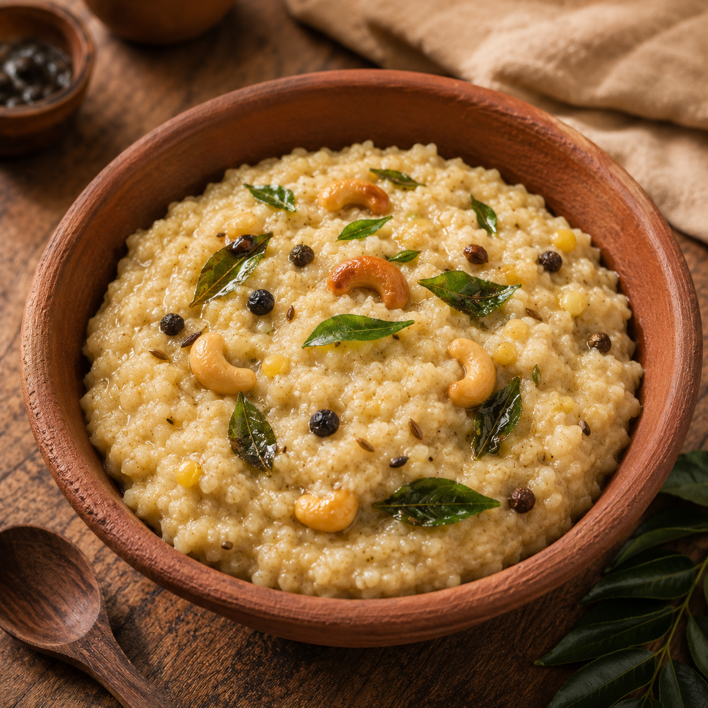
Pongal
Protein-rich traditional pongal that keeps you full longer.
Thinai Pongal
Ingredients
- 1 Cup Thinai (Foxtail Millet)
- 1/4 Cup Moong Dal
- 1 tsp Black Pepper
- 1 tsp Cumin Seeds
- 10 Cashew Nuts
- 2 tbsp Ghee
- Salt to Taste
- 3 Cups Water
Method
- Wash Thinai and Moong Dal thoroughly.
- Pressure cook with water for 3 whistles.
- Heat ghee and roast cashews.
- Add pepper and cumin seeds.
- Mix with cooked millet and dal.
- Add salt and stir well.
- Serve hot with coconut chutney.
Benefit: Rich in Protein, Fiber and Easy to Digest.

Kambu Koozh
Cooling and energy-boosting traditional millet porridge.
Kambu Koozh
Ingredients
- 1 Cup Kambu (Pearl Millet) Flour
- 3 Cups Water
- 1 Cup Curd or Buttermilk
- Salt to Taste
- 1 Small Onion (Optional)
Method
- Mix kambu flour with water without lumps.
- Cook on low flame until thick and smooth.
- Allow it to cool completely.
- Add curd or buttermilk and mix well.
- Add salt and chopped onions if desired.
- Serve chilled for best taste.
Benefit: Rich in Fiber, Improves Digestion and Keeps the Body Cool.
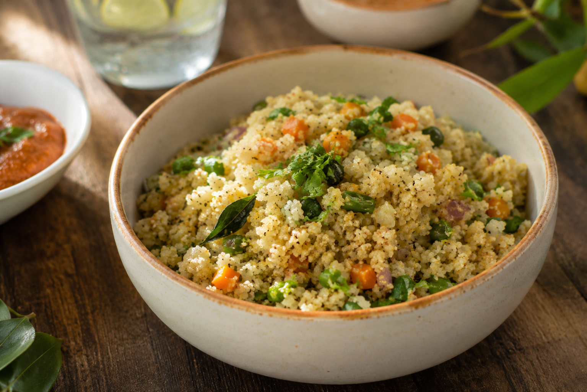
Samai Upma
Light, fiber-rich breakfast for healthy digestion.
Samai Upma
Ingredients
- 1 Cup Samai (Little Millet)
- 1 Onion (Finely Chopped)
- 1 Green Chilli
- 1 tsp Mustard Seeds
- 1 tsp Urad Dal
- Curry Leaves
- 2 Cups Water
- Salt to Taste
- 1 tbsp Oil
Method
- Wash Samai thoroughly and keep aside.
- Heat oil and add mustard seeds, urad dal and curry leaves.
- Add onions and green chilli, sauté until soft.
- Pour water and add salt.
- When water boils, add Samai and mix well.
- Cook on low flame until water is absorbed.
- Serve hot with coconut chutney.
Benefit: High in Fiber, Easy to Digest and Supports Weight Management.
Lunch Recipes
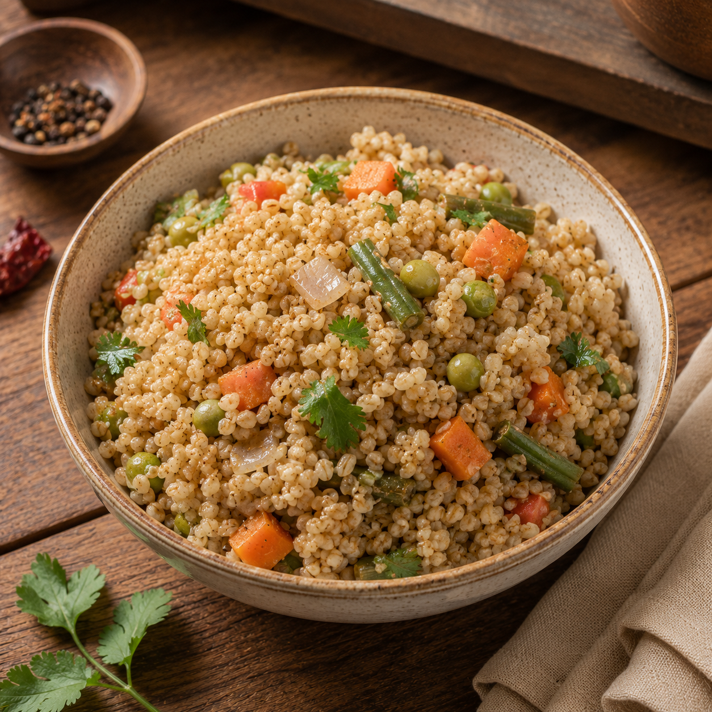
Millet Vegetable Biryani
Calcium-rich dosa perfect for a healthy breakfast.

Kuthiraivali Lemon Rice
Calcium-rich dosa perfect for a healthy breakfast.
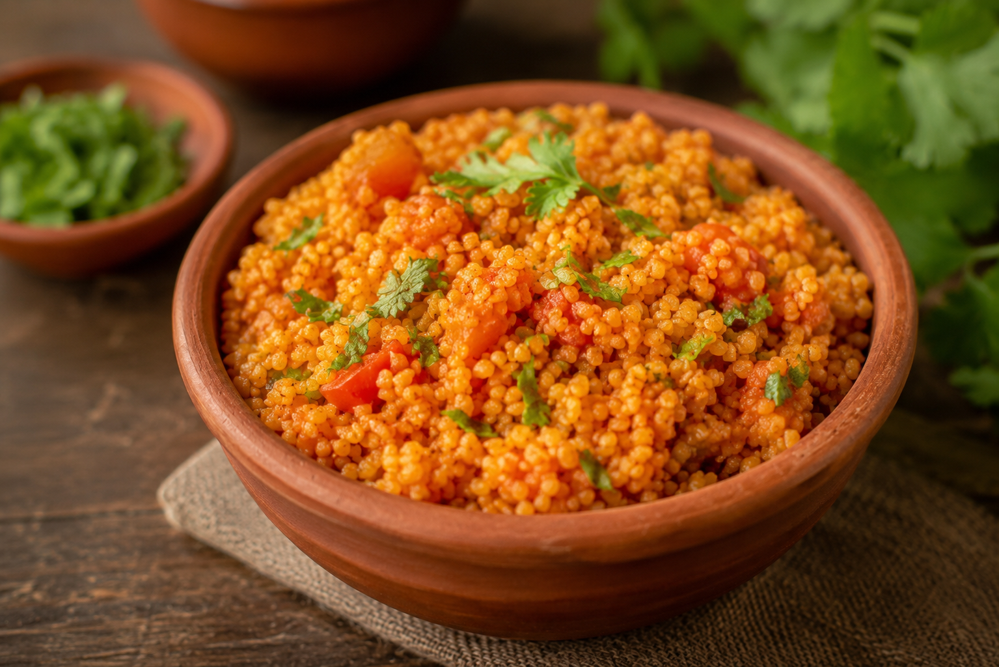
Varagu Tomato Rice
Calcium-rich dosa perfect for a healthy breakfast.
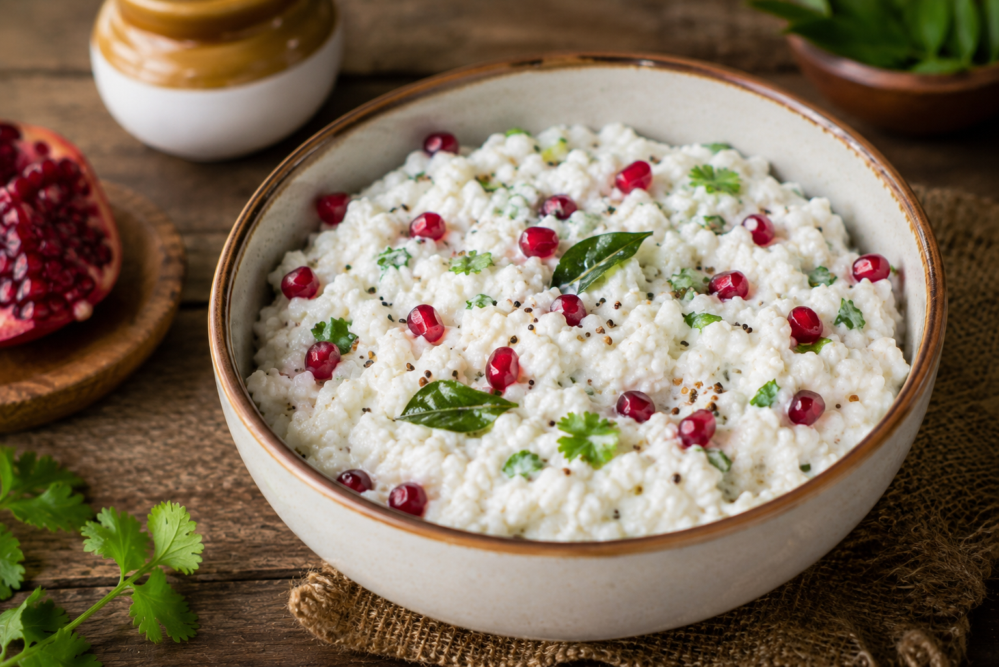
Thinai Curd Rice
Calcium-rich dosa perfect for a healthy breakfast.
Dinner Recipes
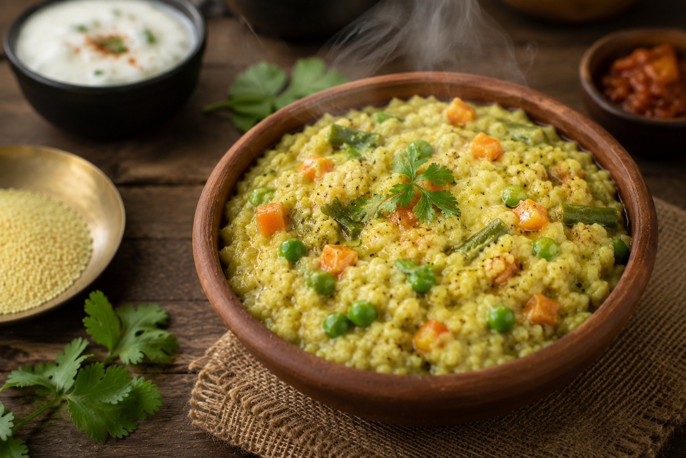
Millet Khichdi
Calcium-rich dosa perfect for a healthy breakfast.
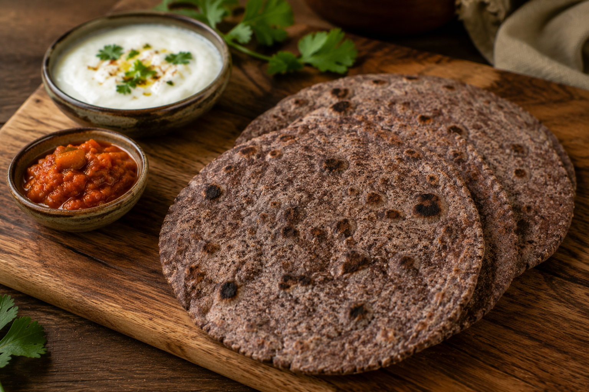
Ragi Roti
Calcium-rich dosa perfect for a healthy breakfast.
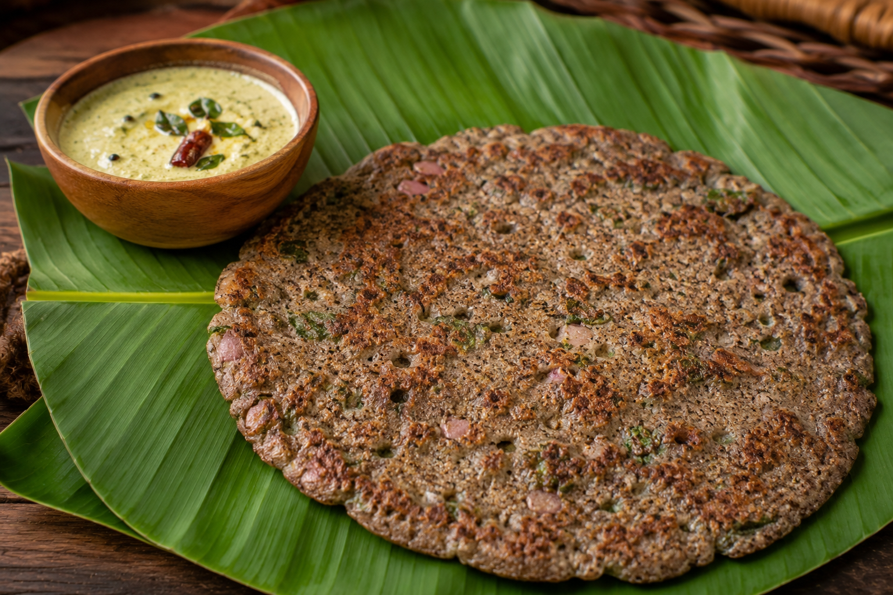
Kambu Adai
Calcium-rich dosa perfect for a healthy breakfast.
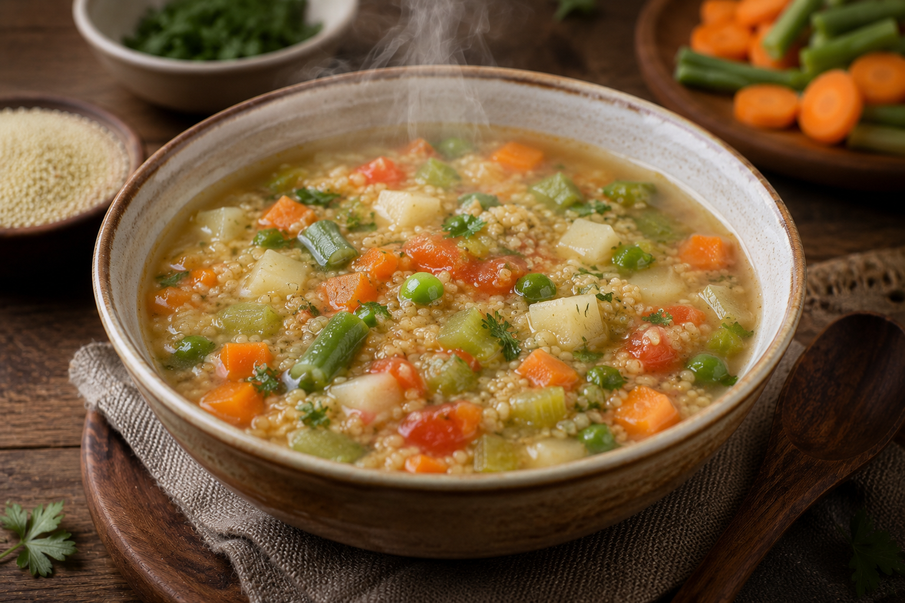
Samai Vegetable Soup
Calcium-rich dosa perfect for a healthy breakfast.
Healthy Snack Recipes
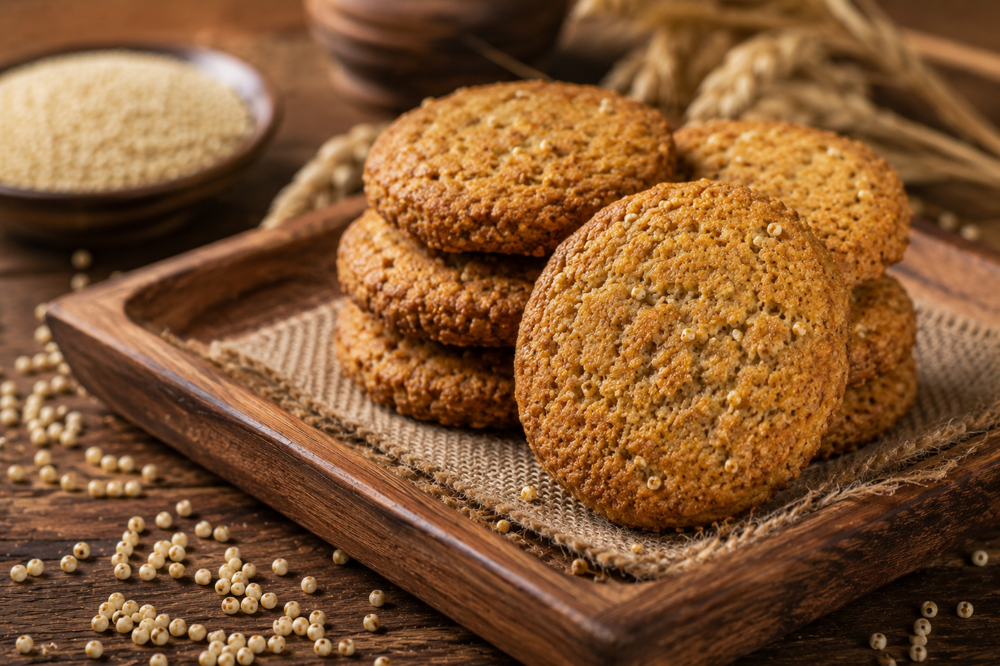
Millet Cookies
Calcium-rich dosa perfect for a healthy breakfast.

Millet Ladoo
Calcium-rich dosa perfect for a healthy breakfast.
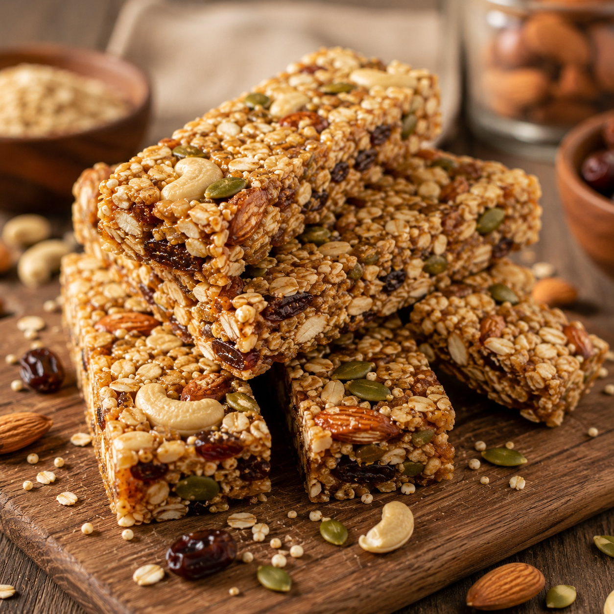
Millet Energy Bars
Calcium-rich dosa perfect for a healthy breakfast.

Millet Murukku
Calcium-rich dosa perfect for a healthy breakfast.

Millet Salad
Calcium-rich dosa perfect for a healthy breakfast.
Traditional Recipes
Thinai Sweet Pongal
Calcium-rich dosa perfect for a healthy breakfast.
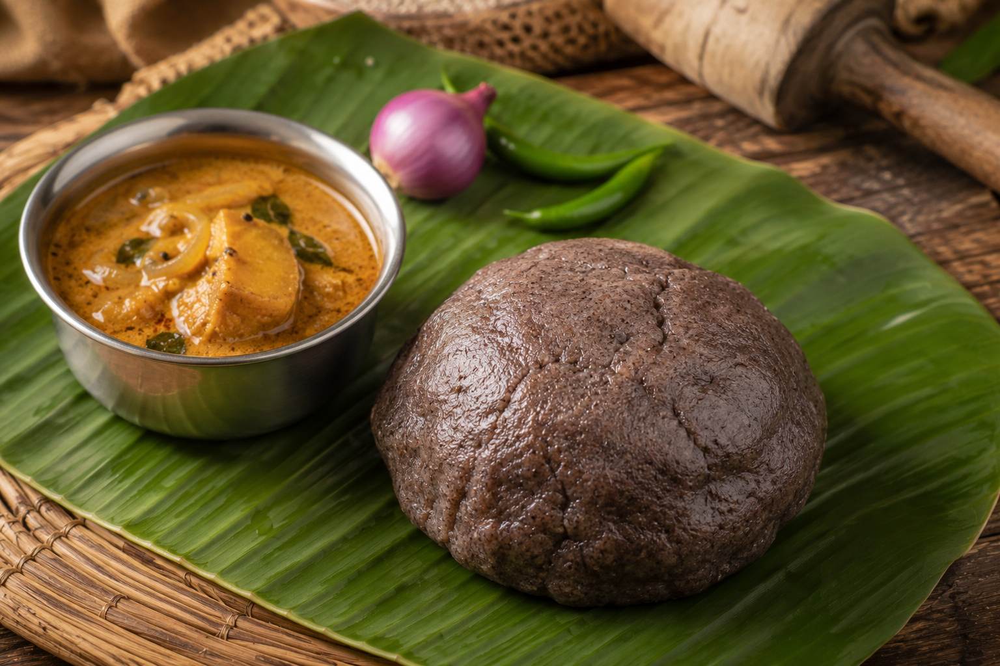
Ragi Kali
Calcium-rich dosa perfect for a healthy breakfast.

Cholam Adai
Calcium-rich dosa perfect for a healthy breakfast.